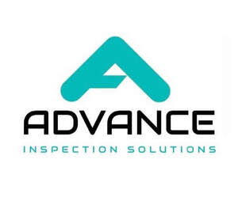

Trade Mark Journal No.2025/049 5 December 2025
UK00004297402 19 November 2025 (9,25,35,37)
Mark 1
Mark 2

- Class 9
- Underground inspection devices, tools, equipment, and systems; devices, tools, equipment, and systems for the examination of pipelines, drains, pipes and sewers; cameras; image capturing and recording devices; computer software and applications for underground inspection devices or equipment, tools, equipment, and systems; computer software and applications for cameras and image capturing or recording devices; software for the collection, recording, processing, analysis, and reporting of data pertaining to the inspection of pipes, pipelines, drains, and sewers; components and accessories for all of the above-mentioned.
- Class 25
- Clothing, footwear, headwear, including t-shirts, shirts, pants, dresses, skirts, jackets, coats, hoodies, jumpers, activewear, loungewear, hats, caps, scarves, shoes.
- Class 35
- Advertising, marketing and promotional services; distribution of promotional merchandise of all kinds for advertising, marketing and brand awareness purposes, including but not limited to apparel, headwear, footwear, bags, drinkware, stationery, pens, keychains, lanyards, decals, stickers, wristbands, badges, patches, accessories, electronic gadgets, mobile accessories, USB devices, novelty items and other branded promotional goods; organisation and implementation of promotional campaigns; brand promotion services; Social media marketing and promotional services; creation, management and distribution of branded digital content across social media platforms for advertising, engagement and brand visibility; promotion of goods and services via social all media networks.
- Class 37
- Maintenance, repair, servicing, installation, refurbishment, restoration, and cleaning of underground inspection devices/equipment/machines, instruments, equipment, and systems, along with their respective parts and fittings; Maintenance, repair, servicing, installation, refurbishment, restoration, and cleaning of devices/equipment/machines, instruments, equipment, and systems used for inspecting drains, sewers, pipelines, and pipes, including their parts and fittings; Maintenance, repair, servicing, installation, refurbishment, restoration, and cleaning of cameras and image recording devices, as well as their parts and fittings; provision of information, advisory, and consultancy services pertaining to all of the above-mentioned.
Advance Inspection Solutions Ltd